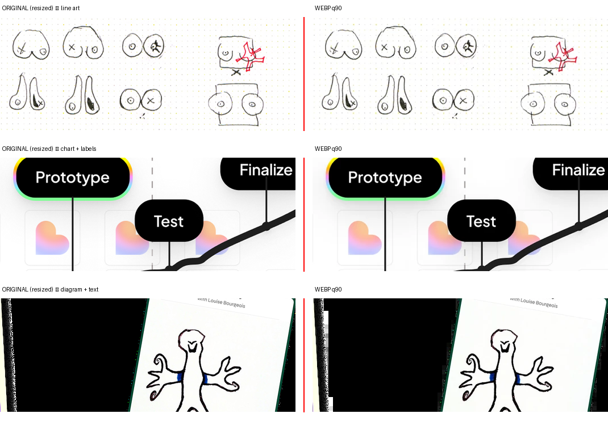

Getting the site off localhost and onto a real URL, and finding out what only breaks once it's there. Mostly a story about bugs that are structurally invisible in development — the ones where the code reads correctly, the dev server looks perfect, and production disagrees.
Sessions: 5 Aug – 26 Aug 2026
The site had no deployment setup at all — no workflow, no base path, no SPA fallback. Setting that up surfaced a bug that had been sitting in the repo for days, invisible to every check we'd run, because the only environment that could reveal it didn't exist yet.
/work/artifakt exists only inside the JS router. Opening, refreshing, or sharing a case-study link would have hit GitHub's 404. Fixed with a 404.html that re-encodes the path into a query, which an inline snippet in index.html restores before React Router boots. Worth naming because nobody would have found this by testing locally — the dev server happily serves every route.url(). It cannot see a path that arrives as a string from MDX frontmatter, so /images/… stayed root-absolute: correct on localhost, wrong under /flore-de-crombrugghe/. 21 paths affected. Fixed at render time with assetUrl.js so the .mdx files stay portable and the deploy path lives in one place.base to the build only, keeping npm run dev at the rootnpm run preview:pages) that serves the built site the way Pages actually serves it. That harness was the only thing that found the bug.loading="lazy" on all 20 content images, none of which are above the fold.--white-transparent, which had exported with its alpha dropped#ffffff, making a "transparent white" token identical to --white. Both badges silently worked around it with a literal bg-white/[0.33] — so the token's value lived as a copy in two component files, the exact drift the token layer exists to prevent. Read the real value back from Figma (#ffffff54 = 32.9%) rather than trusting the workaround. Second export bug of this kind, after the underscore/hyphen mismatch in July.og:image is deliberately left commented out until a 1200×630 asset exists — pointing a preview at a 404 is worse than having none, because some platforms cache the failure.assets/ and they can be wired in.The 5 Aug pass resized every image to 2× its render width and stopped there — it never changed format, and three projects' worth of assets arrived after it. Revisiting the whole site cut the built output from 106MB to 47MB. Mostly a story about where the weight actually was, which was not where I'd have guessed.
public/images, 78% savedpublic/process, referenced by hash-named paths from six static HTML files. It was bigger than the entire project-images folder and had never been through any optimisation pass, because every previous pass had looked at public/images. Worth remembering: "the images" is not a folder, it's a question.